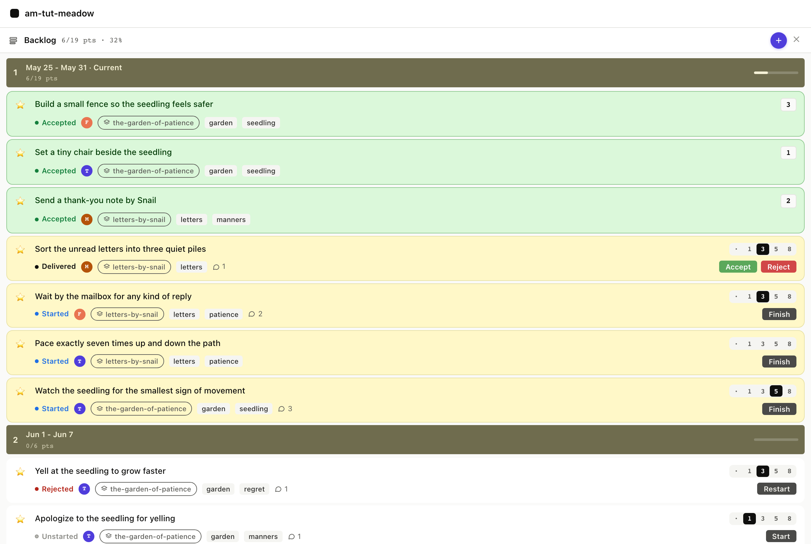
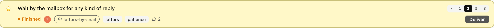
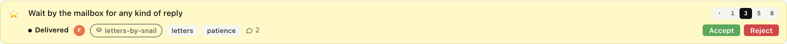
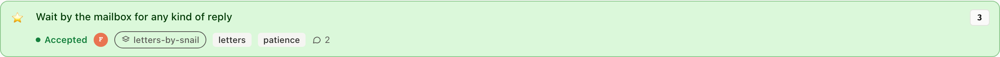

The current sprint
4. The current sprint
You've created a story, estimated it, ranked it, and started it. That's the work-in-progress state. Now we walk it through the rest of the sprint: finish, deliver, accept.
These four transitions are the daily loop: started is the dev
pair's pickup, finished says the code is complete, delivered
says the change is live where the PM can see it, and accepted is
the PM's call that the work is done. Every transition stamps a
timestamp on the story file, and those timestamps drive cycle
time, velocity, and the iteration band the story shows up in.
4.1 The board, at rest
Before any clicks, the current sprint band at the top of Backlog stacks started stories on top with finished, delivered, and accepted below, so the PM's eye lands first on what still needs attention.

$ am show priority
Priority (stories) velocity 7 / iteration
── Iteration 1377 Mon May 18 9 / 7 pts ──
1. ★ Wait by the mailbox started 3p
2. ★ Pace exactly seven times started 2p
3. ★ Watch the seedling started 5p
4. ★ Build a small fence accepted 3p
5. ★ Set a tiny chair accepted 1p
6. ★ Send a thank-you note accepted 2p
7. ★ Sort the unread letters delivered 3p
priority_list returns the same data the board renders. Backlog,
items, velocity, all the timestamps. The MCP Console's wire view
shows the JSON-RPC envelope.
Full envelope
{
"jsonrpc": "2.0",
"id": 1,
"method": "tools/call",
"params": {
"name": "priority_list",
"arguments": { "backlog": "stories" }
}
}
Response: result.structuredContent.items is an array of 18 rows,
each with status, estimate, type, assignees, tags, blocked,
comment_count, epic, and the started/finished/delivered/accepted
timestamps where they exist.
4.2 Finish a started story
Wait by the mailbox is started. We finish it, code is complete, the PM hasn't reviewed yet. The card stays in the current sprint; the pill flips from blue (started) to orange (finished).

$ am finish stories/wait-by-the-mailbox-for-any-kind-of-reply.md
✓ status: finished finished_at: 2026-05-22T08:37:46Z
set_status with status: "finished". The transition stamps
finished: on the story file and leaves started: untouched so
cycle time still measures from first work.
Full envelope
{
"jsonrpc": "2.0",
"method": "tools/call",
"params": {
"name": "set_status",
"arguments": {
"path": "stories/wait-by-the-mailbox-for-any-kind-of-reply.md",
"status": "finished"
}
}
}
Response: {"ok": true} plus the snapshot WebSocket pushes the
updated board to every connected client.
4.3 Deliver
Finished and delivered are distinct moments: finished says the dev pair is done with the work, while delivered says the change is live where the PM can review it. In a real project they are often separated by a deploy pipeline.

$ am deliver stories/wait-by-the-mailbox-for-any-kind-of-reply.md
✓ status: delivered delivered_at: 2026-05-22T08:37:46Z
set_status again, now with status: "delivered". The transition
stamps delivered: and, if for any reason finished: was missing
(rare), back-fills it so the audit trail is complete.
Full envelope
{
"jsonrpc": "2.0",
"method": "tools/call",
"params": {
"name": "set_status",
"arguments": {
"path": "stories/wait-by-the-mailbox-for-any-kind-of-reply.md",
"status": "delivered"
}
}
}
4.4 Accept
Accept is the PM's call, not the dev pair's. agilemarkdown's coach mode actively prevents the dev pair from self-accepting; the GUI makes the moment explicit by colouring the Accept button green and placing it next to a red Reject.
Accept stamps accepted: on the story file. The card flips to the
success palette and loses its action buttons, accepted stories
are facts, not work.

$ am accept stories/wait-by-the-mailbox-for-any-kind-of-reply.md
✓ status: accepted accepted_at: 2026-05-22T08:37:46Z
This is the same set_status call as every other transition, only
with status: "accepted", and the coach refuses it from the dev
pair so only the PM ever sends it.
Full envelope
{
"jsonrpc": "2.0",
"method": "tools/call",
"params": {
"name": "set_status",
"arguments": {
"path": "stories/wait-by-the-mailbox-for-any-kind-of-reply.md",
"status": "accepted"
}
}
}
What just happened
- The card flips green, action buttons disappear, the story counts toward velocity
- Because the accepted date is in the current iteration, the story stays in the Backlog band (above the in-flight line)
- Next Monday's iteration tick will move it silently into the Done panel; the timestamp does the routing, no manual archive needed